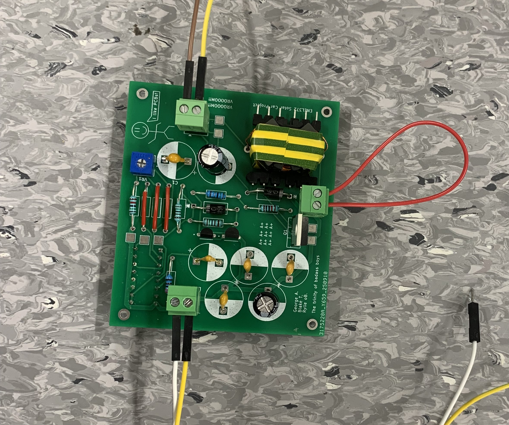
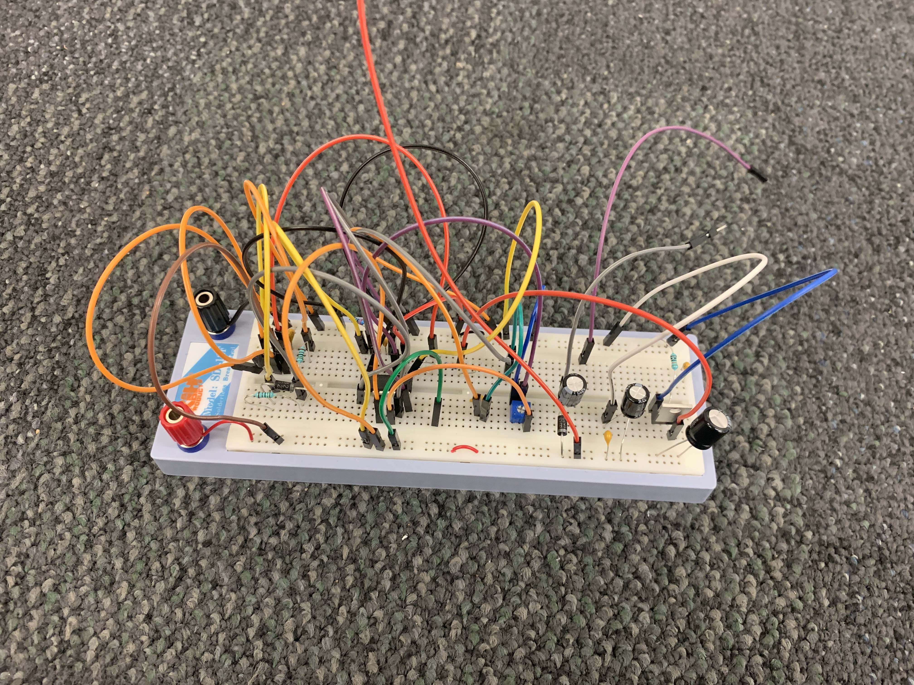
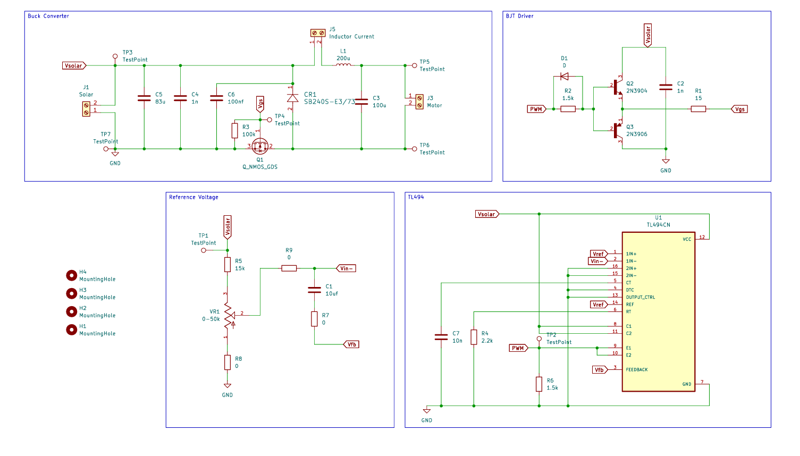

Solar power converter for RC car
University Project
Overview
From: June 2025
To: November 2025
As part of my Power and Analogue Electronics course, ENEL372, we did a project designing and making a buck converter to change the variable 15.2V from a solar panel to a steady 6V to power the DC motors of an RC car.
There was a choice to implement the system on a breadboard, or design a PCB. Naturally, as someone who loves PCBs, I took the opportunity to diversify my experience. We were able to successfully power the RC car from the solar panel and I'm super pleased with the way it turned out.



Tools and skills
- PCB design in KiCAD.
- Design of efficient and stable power converting circuitry.
- Correct placement of decoupling capacitors to ensure stable signals.
- Use of oscilloscopes and power supplies for testing and debugging.
- Reading datasheets to find correct wiring schematics and pin placements.
- Soldering for assembly.
Limitations and Improvements
- A key part of the debugging phase centered around the footprint of the TL494 (control chip) accidently being placed on the back of the board.
- The connectors between the board and the DC motors was unstable and prone to coming off when a bump was hit, these should have been replaced with spade connections.